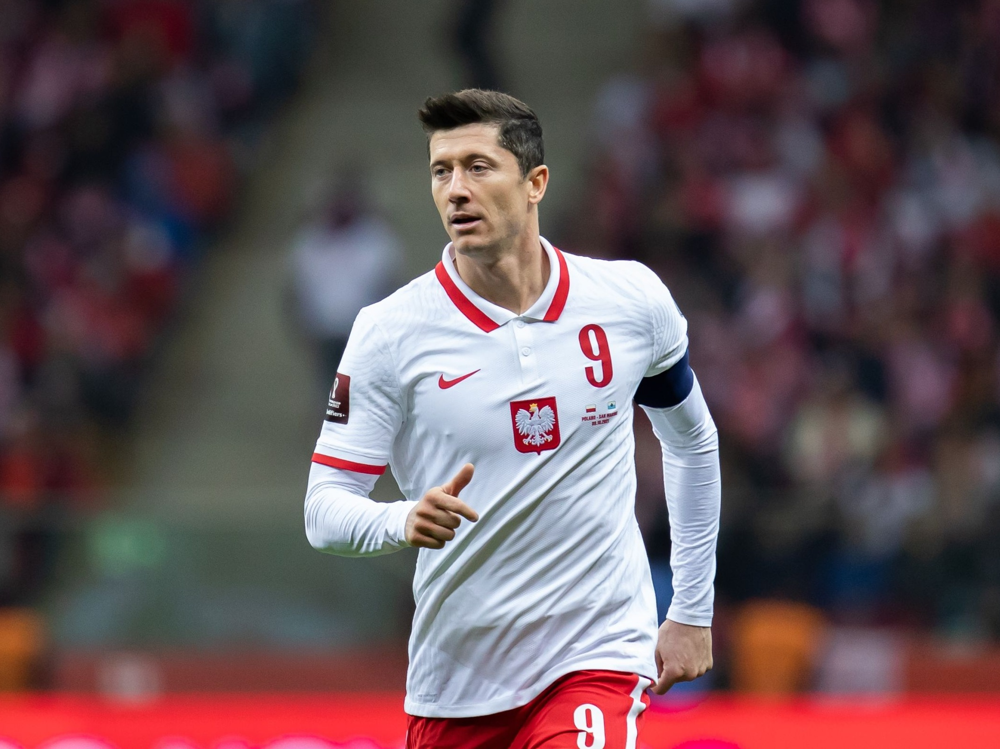

Robert Lewandowski

Robert Lewandowski (ur. 21 sierpnia 1988 w Warszawie) – polski piłkarz, występujący na pozycji środkowego napastnika w hiszpańskim klubie FC Barcelona. Od 2008 reprezentant Polski, w latach 2014–2025 i ponownie od 2025[1] kapitan reprezentacji Polski.
Timeline:
- Birth: 21 sierpnia 1988
- First serious club- Znicz Pruszków
- 18 czerwca 2008 - Lech Poznań
- 11 czerwca 2010 - Borussia Dortmund
- 2010/2011: Pierwsze mistrzostwo Niemiec
- 2011/2012: Hat trick w finale Pucharu Niemiec
- 2012/2013: Cztery gole przeciwko Realowi Madryt
- 2013/2014: Król strzelców Bundesligi
- 4 stycznia 2014: Bayern Monachium
- 2019/2020: Potrójna korona
- 16 lipca 2022: FC Barcelona
More info available below:
Wiki
Timeline